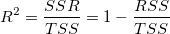

, wenn der Schnittpunkt mit der Y-Achse festgelegt ist.
, wenn der Schnittpunkt mit der Y-Achse festgelegt ist.Letztes Update: 26.02.2020
Warum unterscheidet sich R-Quadrat sehr, wenn der Schnittpunkt mit der Y-Achse im linearen Fit festgelegt ist?
Das liegt daran, weil R-Quadrat mit den untenstehenden Gleichung berechnet wird:

wobei SSR die Summe der Quadrate aufgrund der Regression ist, TSS die Gesamtsumme der Quadrate und RSS die Summe der Fehlerquadrate ist. Für TSS:
, wenn der Schnittpunkt mit der Y-Achse festgelegt ist.|
Hinweise:
Excel verwendet den korrigierten TSS, die erste Gleichung oben, um das R-Quadrat zu berechnen, unabhängig davon ob der Schnittpunkt mit der Y-Achse fest ist oder nicht. Wen Sie das Ergebnis der linearen Anpassung von Origin und Excel vergleichen, sehen Sie, dass das R2 sehr unterschiedlich ist. |
Bitte lesen Sie die ausführliche Erklärung unten, warum wir unkorrigierte Summe der Quadrate für die Berechnung der TSS verwenden, wenn der Schnittpunkt mit der Y-Achse festgelegt ist.
Wenn der Schnittpunkt mit der Y-Achse in die linearen Anpassung eingeschlossen ist, gilt das Verhältnis:
TSS und SSR müssen dann neu definiert werden. RSS bleibt unverändert.
Der Koeffizient der Determination (R-Quadrat) wird folgendermaßen neu definiert:
)^2}{\displaystyle \sum_{i=1}^n y_i^2}")
Bitte lesen Sie weitere Informationen im Kapitel Zusätzliche Informationen zum R-Quadrat.
Schlüsselwörter:linearer Fit, lineare Anpassung, R-Quadrat, Schnittpunkt mit der Y-Achse, festgelegt